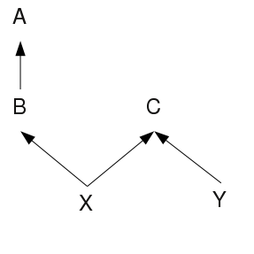

There are various modifiers which can be applied to a class field. Some can also be applied to the class itself, and some to any top-level declaration (class, record, procedure, or global variable). Each modifier is described in detail in its own section.
The private modifier can only be applied to a class field. It indicates that the field can only be accessed from within a method in the same class as the field. For example :-
class A()
private x
private f()
x := 100 # Allowed
end
end
...
a := A()
# Both these would give runtime errors.
a.x := 200
a.f()A private instance method cannot be overridden in a subclass, either directly or indirectly.
The public modifier can only be applied to a class field. It indicates that the field can be accessed from anywhere.
This modifier can be applied to a class field, or any top-level declaration.
When applied to a field, it means that it can only be accessed from within the same package as the field. Further, a package instance method may not be overridden (directly or indirectly) except by a method in a subclass within the same package.
When applied to a top-level declaration, it means the symbol is only visible from within the declaring package. This is useful for hiding implementation classes, helper procedures and so on. For example :-
package my.pack
package class Abc()
...
end
package procedure abc()
...
end
package record rec(a, b, c)
package global a, b, cNow none of these symbols will be visible outside of the package my.pack.
Symbols with package scope cannot be looked up using proc(), Prog.get_global() and similar functions, even from within the declaring package. Nor can they be used with string invocation.
If a final or abstract class is declared with package scope, the package keyword must precede the final or abstract keyword, otherwise a syntax error results. So, one must say package final class Abc() rather than final package class Abc().
A global variable can also be declared with package readable scope, as follows :-
package my.pack
package readable global gThis means that the symbol g will be visible for reading and writing inside the package my.pack, but visible only for reading outside of my.pack. String lookup is allowed, but always returns the readable value.
The package keyword must always precede the readable keyword.
This modifier can be applied to a class field or a class. For a field, its meaning varies slightly depending on whether we are accessing an instance field or a static field.
In the case of an instance field, the caller must be a method in the implemented classes of the instance being accessed. So, for example, consider the following tree of superclasses :-

Here, X has two superclasses, B and C. B in turn has a superclass A, so X’s implemented classes are X, B, C, A. This means that any protected instance field in X could only be accessed from a method within those four classes. A method in Y, would not be able to access the field in the instance of X, even if the field were defined in C, the common superclass of X and Y (in that case a method in Y could access that field on an instance of Y). This little example program illustrates this.
import io
class C()
protected f
public new(f)
self.f := f
return
end
end
class X(C)
end
class Y(C)
public try(o)
write(o.f)
end
end
procedure main()
local x, y
x := X(100)
y := Y(99)
y.try(y) # Okay, writes 99
y.try(x) # Will lead to a runtime error...
endIn the case of a static field, the field being accessed must be in the implemented classes of the calling method’s class. So in the above example a method in X could access static protected fields in any of the classes X, B, C, A.
When the protected modifier is applied to a class, it means that that class may only be subclassed (directly or indirectly) from within the same package. For example :-
package first
protected class C()
...
end
# Allowed
class X(C)
end
...
package second
import first(C)
# Not allowed
class Y(C)
endThis declares the field as static - for more information on what this means, see Fields.
Declaring a static field const means that it cannot be changed (ie, assigned to) after the class has been initialized, which is just after the class’s static init() method has been called. Therefore, static const fields can be initialized in init() and thereafter treated as constants, with any attempt to assign to them causing a runtime error. For example
import io
class Maths()
public static const PI
private static init()
PI := 3.14
end
end
procedure main()
write(Maths.PI) # Write 3.14
Maths.PI := 3 # Runtime error
endNote that, even during class initialization, const fields can only be assigned to from within the init() method. In other words, you cannot call another method from init() and initialize constants there. This restriction is to help oit to determine which constants can be folded during optimization.
A const instance field is similar, and can be assigned to during instance initialization, but thereafter becomes fixed. The class’s new() method can be used to set initial values of the field. For example
import io
class Employee()
public const name, age
public new(name, age)
self.name := name
self.age := age
return
end
end
procedure main()
local e
e := Employee("Mary", 30)
write(e.name, ",", e.age) # Writes Mary,30
e.age := 25 # Runtime error
endA method cannot be declared const.
Fields which are declared static const, and are assigned to a literal value (string, cset or numeric) in the init() method, normally have this literal value substituted for any legal use of the field in the program. Thus the line write(Maths.PI) in the example above will generate the same code as the line write(3.14). This saves a field access at runtime, and also lets the translator apply constant folding on the substituted value. Thus the expression 2 * Maths.PI * radius would generate the same code as 6.28 * radius.
An instance method must be declared as override if and only if it overrides a method in some other class. For example :-
class Parent()
public f()
...
end
end
class Child(Parent)
public override f() # Must be marked 'override'
...
end
public g() # Mustn't be marked 'override'
...
end
endThe intention of this modifier is twofold: firstly, to prevent a subclass from inadvertently overriding a superclass’s method, and secondly, to produce an error if a new method is added to a superclass which clashes with an existing method in a subclass (in the above example, if a method g were added to Parent, a translation error would be raised).
The readable modifier must always be specified together with either the private, package, or protected modifier. It indicates that the field is accessible in a read-only fashion, where it would otherwise be inaccessible, based on that other modifier.
So for example, consider the following class :-
import io
class X()
private readable v
public f()
v := 100
end
end
procedure main()
local x
x := X()
x.f()
write(x.v) # Okay, prints 100
x.v := 101 # Runtime error
endThe field v can be read and assigned to within X, but can only be read from outside of X. Without the readable modifier, it would not be accessible at all outside of X, so the access in write(x.v) in main() would give a runtime error.
Note that a public field cannot be declared readable, because it is already readable everywhere. Nor can a method be declared readable.
An instance method can be declared final. It indicates that the method cannot be overridden. So, for example, the following will give an error during linking because the method f() in Y overrides f() in X, which is marked final.
class X()
public final f()
end
end
class Y(X)
public override f()
end
endA class can also be marked as final, and in this case it means that the class cannot be subclassed by another class. So for example, this is not allowed :-
final class X()
public f()
end
end
class Y(X)
endA static method cannot be final because static methods cannot be overridden, and a method cannot be marked final in a final class, because such a declaration would obviously be superfluous.
If a method is declared native then it has no body, and its implementation should be provided via a C function, either compiled into the interpreter, or loaded from an external library file. See Native Methods for more details on how to do this.
Note that, due to the limitations of the Yacc parser, the native modifier must be the last modifier specified. For example public static native is fine, but native public static would give a syntax error.
If a method is declared optional then it has no body. If it is invoked without having been overridden then a runtime error results.
It is useful for specifying a method which a subclass may optionally choose to implement.
Static methods cannot be optional, since they cannot be overridden, and for a similar reason, an optional method cannot appear in a final class. Due to the limitations of the Yacc parser, the optional modifier must be the last modifier specified.
If a class is declared abstract, then it means that it cannot be instantiated.
If a method is declared abstract then it has no body, and must be overridden and implemented by a subclass. Any class that contains or inherits an abstract method must itself be declared abstract.
Static methods cannot be abstract, since they cannot be overridden, and for a similar reason, an abstract method cannot appear in a final class. Due to the limitations of the Yacc parser, the abstract method modifier must be the last modifier specified.
The visibility modifier of an abstract method does not have any real significance, other than to indicate how an overriding method should be declared. An abstract method can in fact be invoked from a subclass using the same syntax which allows access to an overridden method (Superclass.methodname()), and in this case the visibility modifier will be checked by the interpreter in the usual way. However, such an invocation will simply cause a runtime error.
Abstract classes and methods allow an “interface” of methods to be defined which a subclass must implement. For example :-
abstract class Set()
# Mandatory methods
public abstract generate()
public abstract member(x)
public abstract size()
# Optional methods for mutable sets.
public optional insert(x)
public optional delete(x)
endConsider the following class :-
class Thing()
private x
public get_x()
return x
end
public new()
x := 99
return
end
endAt first glance this seems safe enough, but in fact it is possible to change the value of x from outside the class, as follows :-
import io
procedure main()
local i
i := Thing()
i.get_x() := 100
write(i.get_x()) # writes 100
endThis is because the get_x() method returns a reference to x, which can form the left side of an assignment. Fortunately the problem is easily solved by explicitly dereferencing x using the unary . operator as follows :-
public get_x()
return .x
endThe attempted assignment then generates a runtime error. A nicer solution to this problem would be to make x a private readable variable and get rid of the get_x() method entirely.
Another potential access problem occurs when using structures such as lists, sets and tables. Consider the following class :-
class Thing()
private readable x
public new()
x := [1,2,3,4]
return
end
endUnfortunately, although x cannot be assigned to from outside of the class, its contents can be changed :-
import io, lang
procedure main()
local i
i := Thing()
put(i.x, 5)
write(to_string(i.x)) # writes "list#1[1,2,3,4,5]"
endOne solution to this problem is to make x private and provide a method to generate its elements :-
import io, lang
class Thing()
private x
public gen_x()
suspend .!x
end
public new()
x := [1,2,3,4]
return
end
end
procedure main()
local i
i := Thing()
every write(i.gen_x()) # writes 1,2,3,4 in turn
endNote that we still have to dereference the generated elements before suspending them, otherwise they could be changed.
Another alternative would be to provided a method which simply returned a copy of x.